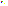
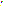

Art and motion are unreviewed. One rational timeline drives this player, frame entries and pair inspection. All canvases retain registration; no per-pose recentering. GIF timing and artistic quality are separate.
Sequence a8140ad99eef75c8960d3b195deb8f16d10db98e5576dd43cd48e4450885dde3



2 exact RGBA differences; 2 visible; 0 hidden only.
0 exact RGBA differences; 0 visible; 0 hidden only.
2 exact RGBA differences; 2 visible; 0 hidden only.